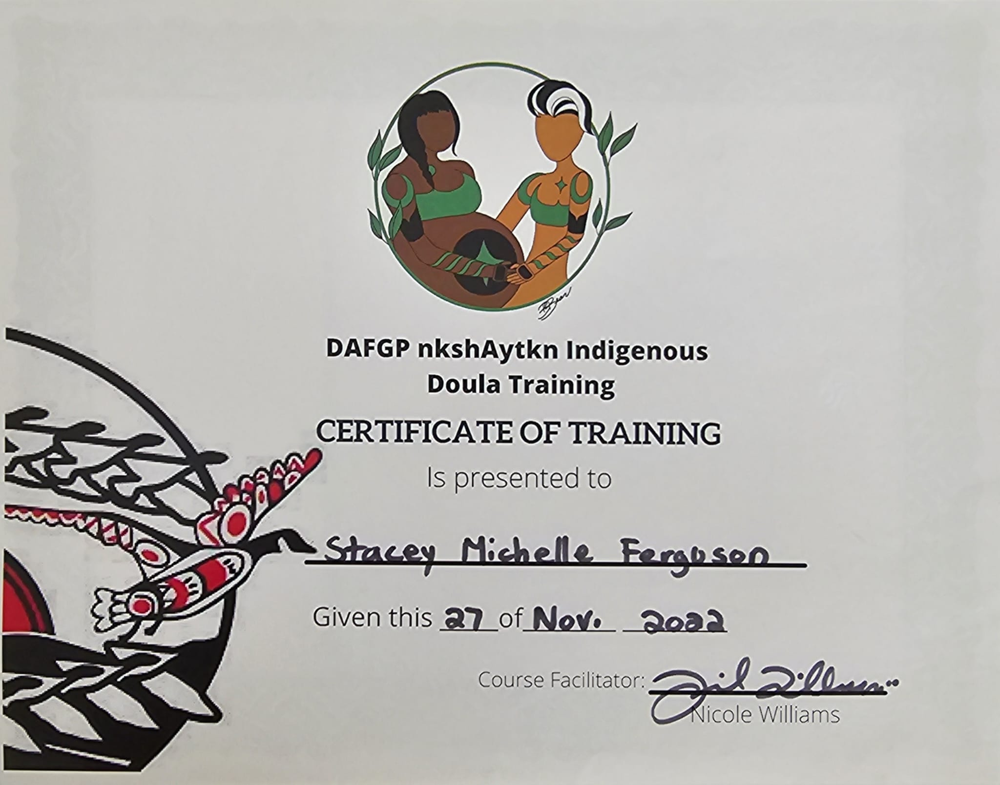
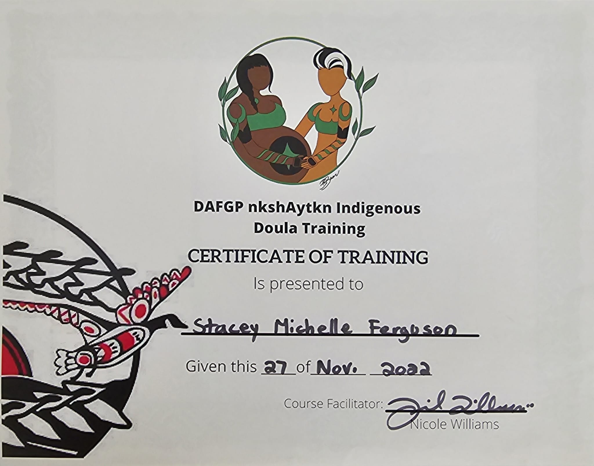

My name is Stacey Ferguson. I am Coast Salish from qayqayt First Nation. I am also Chinese and Scottish. While I had been present for births in the past, supporting family or friends, I didn't really consider myself a doula. This is what we did in our family. When I gave birth to my daughter, my entire family was there.
When early 2020 rolled around my daughter announced she was pregnant with my first grandchild we fully expected I would be with her, every step of the way. We know what happened in 2020. Suddenly, our traditional ways were not allowed in hospitals. The only way I would be permitted to enter the hospital and support my daughter and her husband would be if I attended and received certification from a colonially recognized institution.
I did what any ridiculous mom would do. I went to school and received certification through Doula Canada two months before my daughter gave birth. I enjoyed birth work and wanted to learn more of our traditional teachings.
 
